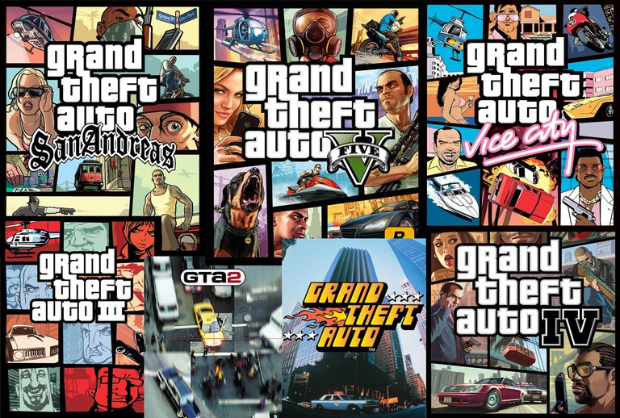

Grand Theft Auto (GTA) is an action-adventure video game series created by David Jones and Mike Dailly; the later titles of which were created by brothers Dan and Sam Houser, Leslie Benzies and Aaron Garbut. It is primarily developed by Rockstar North (formerly DMA Design), and published by Rockstar Games. The name of the series references the term used in the US for motor vehicle theft.
Most games in the series are set in fictional locales modelled on cities, usually either Liberty City, Vice City or San Andreas, which are stand-ins for New York City, Miami and the state of California, respectively. The first game encompassed three fictional cities, while subsequent titles tend to emphasise a single setting. Gameplay focuses on an open world where the player can choose missions to progress an overall story, as well as engaging in side activities, all consisting of action-adventure, driving, third-person shooting, occasional role-playing, stealth and racing elements. The series focuses around many different protagonists who attempt to rise through the ranks of the criminal underworld, although their motives for doing so vary in each game. The series also has elements of the earlier beat 'em up games from the 16-bit era.
The antagonists are commonly characters who have betrayed the protagonist or his organisation, or characters who have the most impact impeding the protagonist's progress. Film and music veterans have voiced characters, including Ray Liotta, Burt Reynolds, Dennis Hopper, Samuel L. Jackson, James Woods, Debbie Harry, Phil Collins, Axl Rose and Peter Fonda. With its British origin, the series contains satire and humour.
British video game developer DMA Design began the series in 1997. As of 2014, it has eleven stand-alone games and four expansion packs. The third chronological title, Grand Theft Auto III, is considered a landmark title, as it brought the series to a 3D setting and more immersive experience. Subsequent titles would follow and build upon the concept established in Grand Theft Auto III, and receive significant acclaim. They subsequently influenced many other open world action games, and led to the label Grand Theft Auto clone on similar games.
The series has been critically acclaimed and commercially successful, having shipped more than 250 million units,[5] making it the fourth-highest selling video game franchise of all time, behind Nintendo's Mario and Pokémon franchises,[6] and Tetris.[7] In 2006, Grand Theft Auto featured in a list of British design icons in the Great British Design Quest organised by the BBC and the Design Museum.[8] In 2013, The Telegraph ranked Grand Theft Auto among Britain's most successful exports.[4] However, the series has also gained controversy for its adult nature and violent themes.
Below is a list by year of all GTA games released.
| Year | Title | Platform |
|---|---|---|
| 1997 | Grand Theft Auto | PS1, WIndows, GBC |
| 1999 | Grand Theft Auto: London 1969, Grand Theft Auto: London 1961, Grand Theft Auto 2 | PS1, Dreamcast, WIndows, GBC |
| 2001 | Grand Theft Auto III | PS1, PS2, XBOX, WIndows, OS X,GBC |
| 2002 | Grand Theft Auto: Vice City | PS1, PS2, XBOX, WIndows, OS X |
| 2004 | Grand Theft Auto: San Andreas, Grand Theft Auto Advance | PS1, PS2, PS3, XBOX, XBOX360, WIndows, OS X |
| 2005 | Grand Theft Auto: Liberty City Stories | PS2, PSP |
| 2006 | Grand Theft Auto: Vice City Stories | PS2, PSP |
| 2008 | Grand Theft Auto IV | PS3, XBOX360, WIndows |
| 2009 | Grand Theft Auto: The Lost and Damned, Grand Theft Auto: Chinatown Wars, Grand Theft Auto: The Ballad of Gay Tony | PS3, XBOX360, WIndows, PSP |
| 2013 | Grand Theft Auto V | PS3, PS4, XBOX360, XBOX One, WIndows |